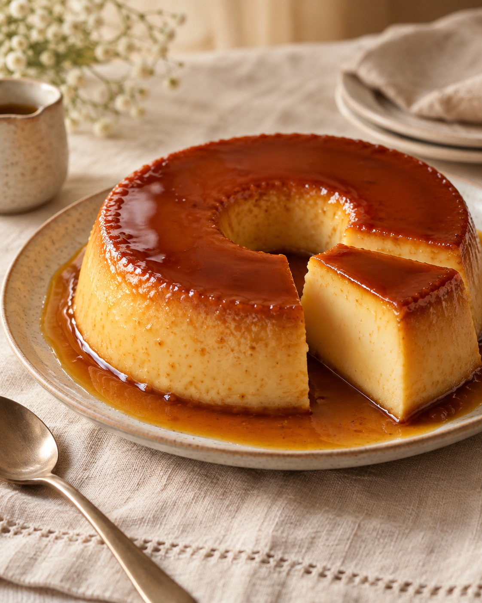
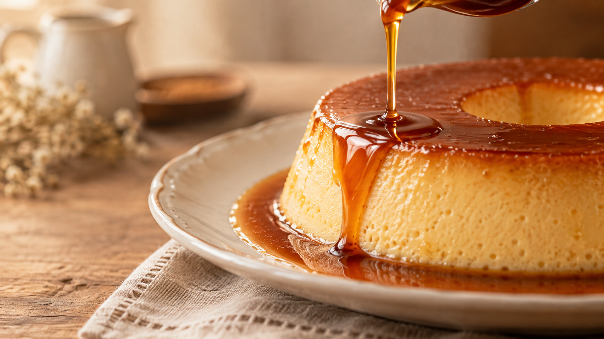

Pudim de geladeira
Mini pudim 120ml
Cremoso, leve e geladinho. Perfeito para matar aquela vontade de doce.
- Pode haver unidades à pronta entrega.
- Para encomendas, pedir com pelo menos 24 horas de antecedência.
- O preparo leva aproximadamente 4 horas.
Pudins artesanais • Rio Branco - AC
Produção artesanal, ingredientes selecionados e aquela calda cremosa que transforma cada pedaço em um momento especial.

Tamanhos
Para aquele momento especial.
Perfeito para dividir.
Para reunir todo mundo à mesa.
Os tamanhos P, M e G devem ser solicitados com pelo menos 24 horas de antecedência.
Caramelo generoso
Cada pudim é preparado artesanalmente, com cuidado desde a mistura dos ingredientes até a camada generosa de caramelo.

Como pedir
Escolha entre pudim de geladeira, pudim de forno ou os tamanhos P, M e G.
Envie seu pedido pelo WhatsApp e confirme disponibilidade, tamanho e data.
Para reservar o pedido é necessário o pagamento de 50% do valor como sinal.
Transparência
Sobre a marca
A Pudim da Jeni nasceu do carinho por sobremesas artesanais e da vontade de transformar ingredientes simples em momentos especiais.
Cada pudim é produzido de forma artesanal, fresquinho e com ingredientes selecionados, buscando aquele equilíbrio perfeito entre cremosidade, sabor e uma calda irresistível.
Jennifer Souza
Dúvidas
Sim. O ideal é realizar sua encomenda com pelo menos 24 horas de antecedência.
O pudim de geladeira de 120ml às vezes pode estar disponível à pronta entrega. Consulte pelo WhatsApp.
O pudim de geladeira de 120ml custa R$ 7 e o pudim de forno de 120ml custa R$ 10.
A encomenda é confirmada após o pagamento de 50% do valor total como sinal.
Em caso de cancelamento pelo cliente, o valor pago como sinal não é devolvido.
Atendemos em Rio Branco - Acre.